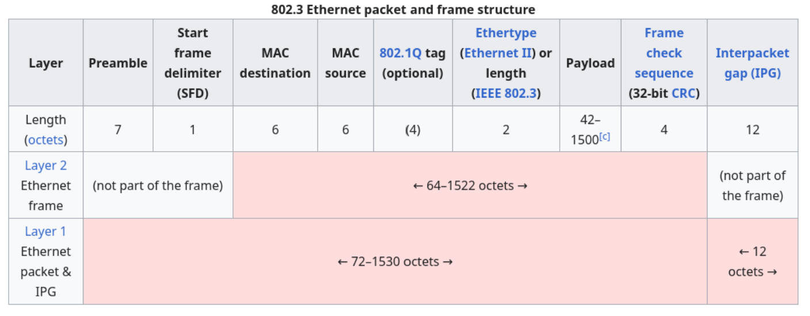
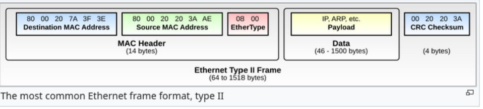

이더넷 헤더에 대해 알아보고 직접 FCS를 계산하는 코드를 작성해볼것이다.

이더넷 헤더다.
non part of the frame 이라고 적혀져있는것은 말 그대로 우리 알빠 아니고 phsycial layer에서 작동한다고 한다.
그래도 공부하는김에 알고가자면
Preamble: 송신자와 수신자의 쿨럭수를 맞춘다.
+) 만약 보내는 쪽이 1초에 9개의 비트를 쏘고 있는데 받는쪽이 1초에 8개의 비트를 받는다고 상상하면 상상만으로 곤란해질것이다.
Start frame delimiter(SFD) : 저 Preamble이 끝났다는것을 알리고 진짜 이더넷 헤더가 시작된다는것을 알린다.
Destination Mac: 목적지 맥주소
Source Mac: 보내는 맥주소
※ 왜 DMac이 SMac보다 앞에 있을까?
데이터가 들어오면 랜카드는 dmac주소를 보고 버릴지 말지 결정한다.
맥주소가 앞에 있으면 앞의 6바이트만 읽고 버릴 패킷인지 아닌지 결정할 수 있다.
실질적으로 모든 패킷을 다 읽어서 메모리에 올린 후 cpu에 넘겨줄 수는 없기에
맥주소를 앞에다가 적어 cpu의 부하를 막고 속도를 개선한다.
Ethertype or Length: 상위계층에서 어떤 프로토콜을 사용하는지 나타낸다.
+) IPv4는 0x0800, Arp = 0x0806을 사용한다.
pyload : 실제 데이터가 담기는 일종의 알맹이라 할 수있다.
FCS: 전송도중 데이터가 깨졌는지 검사하기위한 오류검출코드이다. 바로 다음 네트워크 장비까지 가는 동안의 무결성을 보장하지만 전체 데이터의 무결성을 보장하지는 않는다.
IPG : 프레임간 간격, 다음 프레임이 들어오기 전 회선을 비워두는 시간이다.

실질적으로 신경써야하는 부분이다.
fcs 를 계산해야하기 때문이다.
fcs를 계산하는 방법은 다음과 같다.
1. 이더넷 헤더와 데이터 페이로드를 이진수로 변환
2. 32개의 0을 넣어서 생성다항식과 32비트의 나머지가 나올때까지 xor
3. 나머지를 반전시키기
이때, 나온 32비트의 나머지가 fcs이고 이것으로 데이터링크계층에서 전송 도중 데이터가 손상되었는지 확인할 수 있다 .
여기서 들 수 있는 의문은 왜 Xor 연산을 하는가이다.
기본적으로 목적은 나머지를 남기는것이다.
이때, 컴퓨터 알고리즘 상의 가장 효율적인 나머지 연산이 xor이기 때문이다.
간단해보여도 막상 코드로 구현하려면 막막하다.
최대한 ai를 사용하지않고 만들려다보니 별거아닌코드도 시간이 걸린다. 한 일주일 걸린것 같다.
from curses import raw
import sys
import socket
from tkinter.ttk import Widget
import zlib
class About_Packets:
def __init__(self):
raw_Eth = 0x0003 #3412
ntohs = ((raw_Eth & 0x00FF) << 8) | ((raw_Eth & 0xFF00) >> 8)
conn = socket.socket(socket.AF_PACKET, socket.SOCK_RAW, socket.ntohs(raw_Eth))
print("패킷 캡처")
raw_data, addr = conn.recvfrom(65535)
self.D_Mac = raw_data[0:6]
self.S_Mac = raw_data[6:12]
self.EtherType = raw_data[12:14]
self.DataPayload = raw_data[14:]
class Calculate_Fcs(About_Packets):
def __init__(self):
super().__init__()
def calculate_crc32(self):
super().__init__()
self.Data = self.D_Mac + self.S_Mac + self.EtherType + self.DataPayload
i = 0
fcs_value = zlib.crc32(self.Data)
crc = 0xFFFFFFFF
poly = 0xEDB88320
for byte in self.Data:
crc ^= byte #한바이트
print("and" ,hex(crc),"num: ",i)
for _ in range(8):
if crc & 1:
crc = (crc >> 1) ^ poly
print("crc = 1: " , hex(crc))
else:
crc >>= 1
print("crc!= 1:", hex(crc))
final_crc = ~crc & 0xFFFFFFFF
i += 1
print(f"final crc:(Hex): {hex(final_crc)}")
print(f"Calculated FCS (Hex): {hex(fcs_value)}")
if __name__ == "__main__":
packet = About_Packets()
packet = Calculate_Fcs()
packet.calculate_crc32()변수 i는 그냥 흐름을 보기 쉬우라고 넣어놓은거다.
위를 기준으로 만들었다.
만약에 최종 CRC값이 0x00000000 인 패킷이 있다고 했을때 전송도중에 하드웨어 오작동으로 패킷 맨 끝에 쓰레기 데이터 0x00 이 더 붙여서 오면 이 에러패킷을 정상이라고 판단할 가능성이 있다.
그리고 무엇보다 수신측 검증과정을 단순화시켜준다.
반전을 안했을때는
crc값과 데이터를 나눠서 분리해 연산해 결과 비교를 해야한다.
하지만
반전을 했을때는
정상패킷일 경우 수신측에서 전체를 통째로 연산하면되는데 이때, 빅엔디안 기준 0xC704DD7B (리틀엔디안 기준 0x2144DF1C) 인지만 확인하면 되기 때문에 편하다.
그래도 로그인도 안한 나에게 도움을 준 재미나이행님께 무한한 감사를...
근데 좀 한번에 알려줄 수는 없니
예제코드 보고 이해하고 만들고 다시 보고 이해하고 만들고의 반복이었다.
이게 무슨의미인가 싶긴했고 어려웠지만,, 재미있었다.
실제로도 코드 구현해보니 xor은 나머지를 찾는데 초점이 맞춰져있는듯 해보였다.
다음은 netfilter을 활용해서 패킷변조, 차단등을 해보아야겠다.